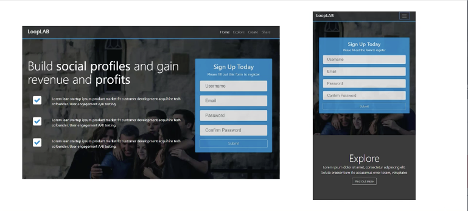
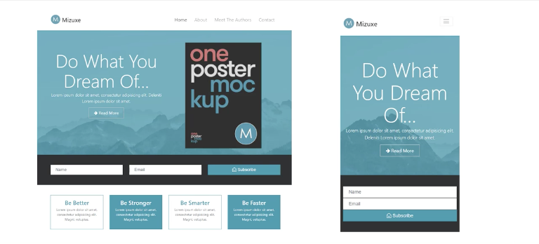
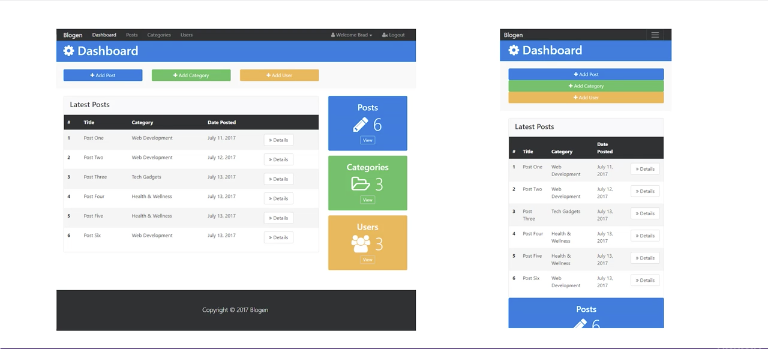
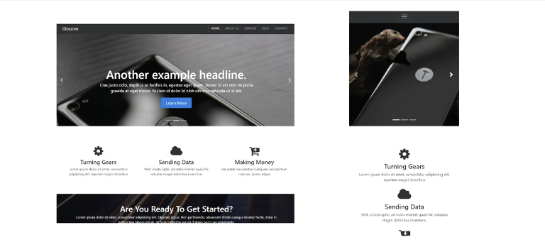
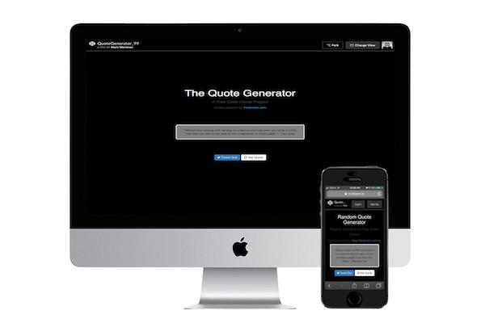
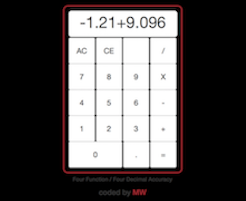
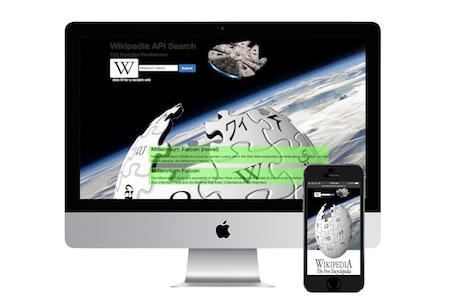

Bootstrap 4 Beta - Udemy Course Projects
Responsive design done in Bootstrap 4 Beta. These are coursework projects completed at
Udemy. The Udemy class is called
Bootstrap 4
From Scratch With 5 Projects by Brad Traversy, 12 year Full Stack Veteran Developer. Brad also runs
Traversy Media. Theses projects
implement: smooth scrolling and accordion widget with jQuery plugin, grid system and new flexbox classes,
carousel and slick slider, lightbox component for media gallery, modals, video, and CKEditor.
Pomodoro Clock
The Pomodoro Clock is a time management application showcasing "iterative and incremental
software design"(Wikipedia).

Quote Generator
A random quote generator using a JSON-encoded, third-party API.
The user can make requests for additional quotes by clicking the "Get Quote" button,
and the user may tweet out the quote to Twitter if desired.
TwitchTV Status Viewer
Twitch tv status viewer implemented by a JSON-encoded, Twitch API.
The API was used to generate a channel logo, channel name, and streaming status that
included a description if the channel was streaming. My solution to
this project was an iterative, multi-API call to input data which was output by embedding
HTML code within jQuery.

Simple Calculator
Building The Simple Calculator was an exercise of logic done in jQuery. The
calculator operates on immediate execution methodology, where chaining expression are
evaluated upon designation of the second operator. The program code could be considered verbosely commented; however,
I wanted to display documenting skill and communication ability.
Weather App
The Weather App shows a users local weather condition such as weather description, wind speed,
and temperature in fahrenheit or celsius. The Weather App operates from two API calls, one
to get the users approximate geolocation and the other to get the corresponding weather information. The app
also displays a background image contingent of the weather conditions.

Wikipedia Search
Wikipedia Search Tool implemented by a JSON-encoded, Wikipedia API.
The API was used to generate Wikipedia information such as a title, link, and description of an article
pertaining to the search query.